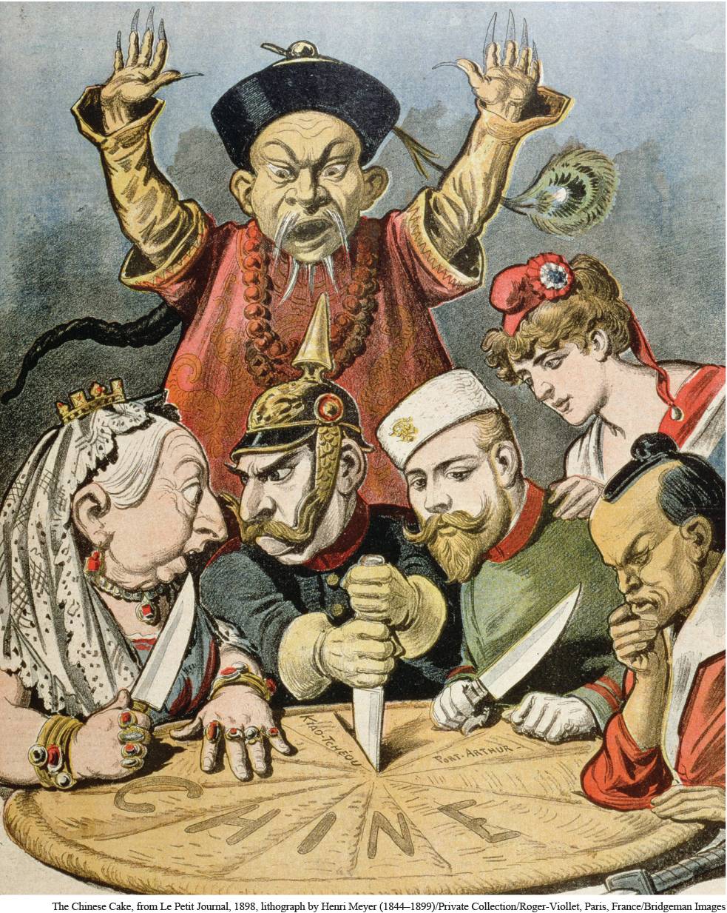

Carving Up the Pie of China In this French cartoon from the late 1890s, the Great Powers of the day (from left to right: Great Britain’s Queen Victoria, Germany’s Kaiser Wilhelm, Russia’s Tsar Nicholas II, a female figure representing France, and the Meiji emperor of Japan) participate in dividing China, while a Chinese figure behind them tries helplessly to stop the partition of his country.The Chinese Cake, from Le Petit Journal, 1898, lithograph by Henri Meyer (1844–1899)/Private Collection/Roger-Viollet, Paris, France/Bridgeman Images